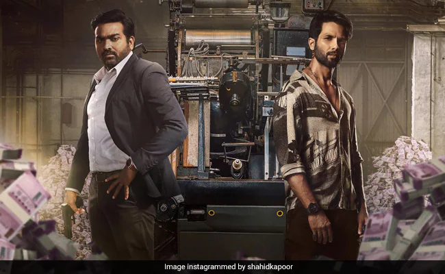

"Art is not just what you see, but what you make others see."
Sunny, a brilliant small-time artist, finds himself drawn into the high-stakes world of counterfeiting when he creates the perfect fake currency note. Mansoor Dalal, a fiery and unorthodox task force officer, makes it his mission to rid the country of the counterfeiting menace. What follows is a thrilling cat-and-mouse chase between the establishment and the underdog, where the lines between right and wrong become increasingly blurred.